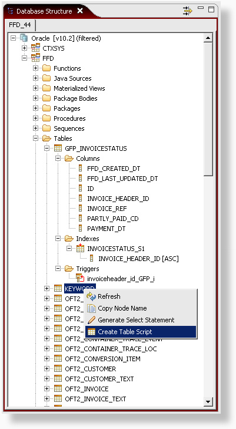
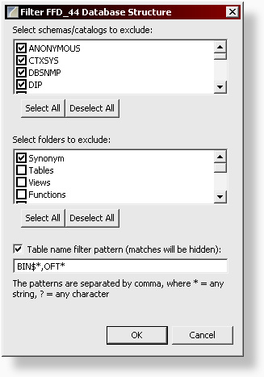

Using the Database Structure view, you can explore multiple
databases simultaneously.
When a node is selected, the corresponding detail is shown in the
database detail view. If the detail view is not active, double clicking
the node will bring the detail view to the front.

The structure tree can be filtered on three levels:
